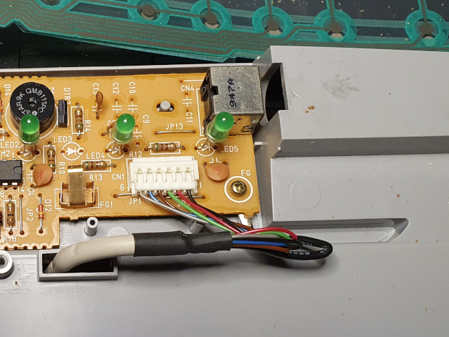
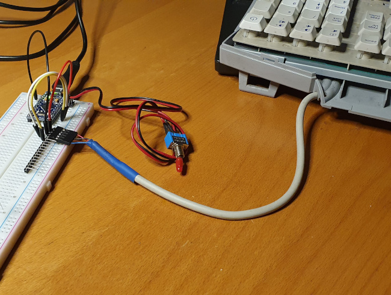
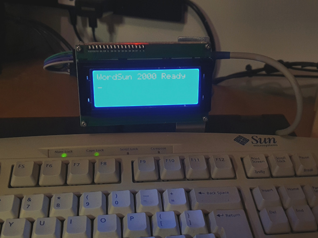

Reviving old keyboards for Arduino
 Fitting Arduino-type devices with a custom keyboard or keypad is
not difficult: I have a
detailed article here,
but this process is well-documented in many sources.
Strangely, though, attaching a
ready-built, mainstream keyboard is less straightforward. It's possible to
dismantle a modern (or old) keyboard and connect a microcontroller to the
existing keyboard matrix. Many enterprise retrocomputing enthusiasts
have done this, to revive the keyboards from Vic 20s, and similar 1970s
machinery. However, it seems a shame to dismantle and expunge a perfectly
functional keyboard, even if there's no mainstream equipment it would
now work with. In any event, it's considerably easier to interface an
old keyboard to a microcontroller than a new one.
Fitting Arduino-type devices with a custom keyboard or keypad is
not difficult: I have a
detailed article here,
but this process is well-documented in many sources.
Strangely, though, attaching a
ready-built, mainstream keyboard is less straightforward. It's possible to
dismantle a modern (or old) keyboard and connect a microcontroller to the
existing keyboard matrix. Many enterprise retrocomputing enthusiasts
have done this, to revive the keyboards from Vic 20s, and similar 1970s
machinery. However, it seems a shame to dismantle and expunge a perfectly
functional keyboard, even if there's no mainstream equipment it would
now work with. In any event, it's considerably easier to interface an
old keyboard to a microcontroller than a new one.
Modern keyboards invariably use USB or Bluetooth. Although there are microcontrollers that can handle both of these natively, most (all?) mainstream Arduino-like devices can't -- not without additional hardware -- the communication is simply too fast.
This article is about using 90s keyboards with Arduino-like microcontrollers. Not only are older keyboards easier to interface, they are often better keyboards than their modern counterparts. After all, we're considering a time when a keyboard cost as much as a desktop computer does now.
There are (at least) two types of keyboard that are of interest here: PS/2 keyboards (initially developed by Microsoft and IBM) and the proprietary serial keyboards made by Sun Microsystems. Both are widely available from computer junk sales and on-line auctions. Of the two, my experience is that the Sun keyboards are easier to interface, although plenty of code samples are available for both types. Both these keyboard types are powered by 5V supplies, and use 5V TTL-style logic, making them electrically compatible with the Arduino.
PS/2 keyboards
PS/2 keyboards use a two-wire, synchronous, bi-directional serial protocol. That is, a single pair of data and clock lines provides for communication in both directions. The ends of the data and clock lines are expected to be connected to the open collectors of transistors. Either end of the link -- the keyboard or the host -- can pull the voltage low, but neither can force it high. This arrangement means that there's no need to allow specific timing frames for connection in both directions, although there has to be a protocol to deal with contention, when both keyboard and host try to transmit at the same time. In practice, of course, communication is nearly always going to be from the keyboard to the host, so the contention protocol is rarely invoked.
The connection pin-out and protocol are described reasonably well in this Wikipedia article. There are a number of serviceable code examples on GitHub, like this one by Paul Stoffregen.
PS/2 connectors remain widely available although, of course, if you're integrating a PS/2 keyboard into some other piece of equipment, you could just cut the connector off and substitute your own.
Using a synchronous (clock-governed) serial protocol meant that a higher data rate could be achieved than with an asynchronous connection, with the technology of the day and at low cost. For the record, the data rate was about one kbyte/second. Hardly fibre speed, but still much faster than the Sun keyboards.
Sun keyboards
Sun Microsystems manufactured a whole range of proprietary keyboards for their Sparc workstations and servers back in the 90s. Eventually Sun moved to USB for its keyboards, as everybody else did; but keyboards with the older, proprietary interface still turn up regularly -- typically at the back of the IT store-room. I don't think that units earlier than the Type 4 are still readily available -- not outside museums, anyway -- and after the Type 7 all had USB. So if you're looking for one of these, you're most likely to find a Type 5 or a Type 6 -- and some of the Type 6 units were USB. I have a bunch of Type 5 and 6 keyboards from my days at Sun. I guess these belong to Oracle now; if Mr Ellison wants them back, he's very welcome to call me and make arrangements.
The Type 5c is still remembered fondly. It was, and is, a huge, heavy slab of metal and plastic, with a heavy-ish key action. There's a fair amount of empty space inside -- certainly enough to squeeze in an Arduino Nano or SparkFun Pro Micro. The Type 6 is much smaller and lighter, and there's really only a tiny compartment that other equipment could be inserted into. Of course, if you're connecting something external to the keyboard, that's not really a problem.
The Sun keyboards use an almost-familiar protocol -- there are separate receive and transmit lines, each carrying asynchronous data at 1200 baud, 8 data bits per frame. It's almost a 5-volt version of RS-232, in fact -- but with one irritating wrinkle: the logic levels are inverted. That is, the receive and transmit lines are kept at 5V when idle, and signal by switching to ground. These aren't open-collector connections like those in PS/2 keyboards -- you really have to connect them up properly to avoid damage.
The pre-USB Sun keyboards using a rather unusual 8-pin mini-DIN connector. Remarkably, plugs and sockets are still available -- I presume they are used in other equipment as well.
The photograph below shows the logic board of the Type 6, and particularly the serial connector. You could make your own cable to connect here, or just cut off the existing mini-DIN and fit your own connector. Or just buy an 8-pin mini-DIN socket and keep the keyboard intact (in case it turns into a family heirloom in due course).

For the record, the cable colours for the Type 6 are:
Red: 5V
Black: ground
Blue: output from keyboard
Brown: input to keyboard
The other connections are for the mouse, which was traditionally chained to the keyboard in these units. Here's my Type 6 connected to a solderless breadboard for testing.

Most Arduino devices have built-in UARTs that can handle a 1200-baud
serial connection with ease. Unfortunately, so far as I know, none can
deal with the logic level inversion without additional hardware.
Inverting the logic levels is trivially easy using a logic NOT gate, or
just a one-transistor inverter.
However, the standard SoftwareSerial library
can deal with the inverted logic, at the expense of a slightly
greater use of computational resources.
If you're using the SoftwareSerial library, one thing to
bear in mind is that you'll need to connect the keyboard output to
a GPIO pin that can generate interrupts. Which pins can generate
interrupts depends
on the specific Arduino device.
With the SoftwareSerial library, the interfacing code is
absolute trivial. Here is some outline code to read keystrokes from
the keyboard. In this example, the keyboard's output line is connected
to pin 14 on the Arduino, and the input to pin 16.
#include <SoftwareSerial.h>
SoftwareSerial sun (14, 16, true /* inverted logic */);
void setup()
{
sun.begin(1200);
}
void loop()
{
while (!sun.available()); // Wait for data
int16_t c1 = sun.read();
// Be aware that ::read() returns an _int_, so 8-bit signed chars that
// were originally negative end up > 127
if (c1 == 127)
{
// This is a NOP code
}
else if (c1 > 127)
{
c1 -= 128;
// Handle key down
}
else
{
// Handle key up
}
}
The Sun keyboards use an interesting method for representing keystrokes. Each data frame is one 8-bit byte, and the byte is interpreted as a signed character. Key-down operations are represented as positive numbers, key-up as negative. So, for example, pressing the 'A' key generates the code 77, while releasing it generates -77.
For better or worse, though, the SoftwareSerial::read()
method returns an int, which is usually 16 bits on an AVR
microcontroller. So the original negative numbers end up as positive
numbers in the range 128-255, just because the original sign bit in the
8-bit char becomes an ordinary data bit. As a result, when we read a number
less than 128, it's a key-down code; 128 or greater is a key-up,
and we need to subtract 128 to get the corresponding key-down
code.
Using the old keyboards
If all you want to do is use an old keyboard with new equipment, that's easily done with PS/2 keyboards -- adapters to USB are widely, and cheaply, available. The situation is slightly more complicated with the Sun keyboards, because there is no (affordable) commercial adapter. However, you can use a SparkFun Pro Micro as an adapter. The Pro Micro costs only a few pounds, and has a USB port that is capable or emulating a USB keyboard.
Making such an adapter requires no additional hardware, and there is complete code on GitHib from Ben Rockwood. Mr Rcockwood's code is particularly useful because it contains a complete list of the Sun keyboard codes, which will be necessary in any application.
It's more interesting, though, to use the Arduino for a custom application, and here the possibilities are endless. The photo below shows a complete BASIC workstation, built using a Type 6 keyboard, an Arduino, and an LCD display module. It's running my PMBASIC to provide a BASIC programming environment of mid-1970s vintage.

In this design, the Arduino and other bits of hardware are built on a stripboard panel of the same size as the LCD module, and mounted directly behind it. The whole thing attaches to the keyboard using a home-made sheet aluminium bracket.
Although I never intended to, I think I might inadvertently have constructed a Cyberdeck.